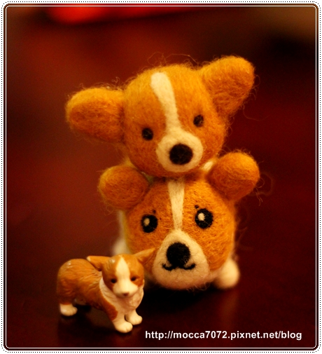
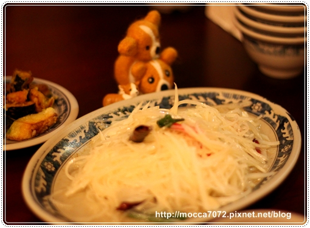
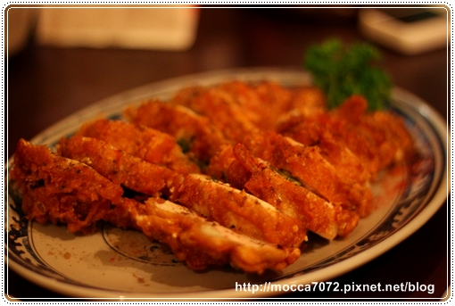
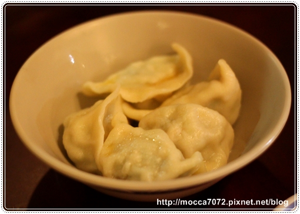
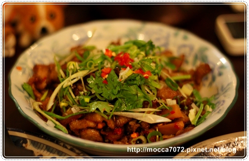
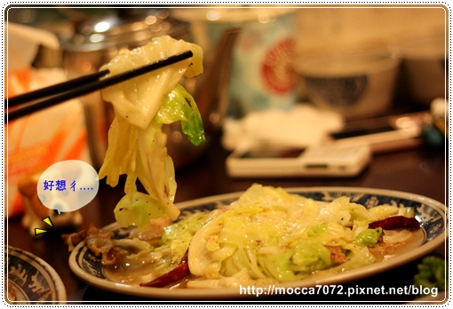

上週五糾了娘砲軍團的阿拔阿木吃好料去！
是WOW老闆推薦的陜西美食兒『勺勺客』
因為店內無法攜帶寵物，所以特別提醒了兩位阿木記得帶偽小狗來！
上中下：摩小卡 ＆ 小小ㄋㄟ ＆ 媽小包

不過阿寶娘那天上幫來不及，匆匆忙忙之下漏帶了媽小包
還好隨身有隻偽小寶就帶來 充充數！
但偽小寶沒有捅你眼呀！怎嘛看都覺得他在模仿摩卡卡～哈哈哈！

店內的裝璜是以陜北人住的窯洞設計，
店名勺勺客則是陜西人稱料理達人的稱呼！完全猜不到意思！XD
而且牆上都是滿滿的塗鴉跟簽名，不過近看還蠻噁心的就是了！哈哈哈

這塊白白的是我們點的羊肉泡饃的膜，這道菜應該是來的人必點吧！
不過卡內麻說這間店的比秦味館的小很多！

首先要先掰饃，把它撥的小小的先，
醬吃起來有口感又不會太大很難嚼！

撥完饃後就交給店家拿到廚房加湯熬煮，我說這湯頭好喝耶！
羊肉塊的部分，據摩卡拔描述肉很軟爛好吃！
不過缺點還挺小碗的嘛！不過它可以免費加一次湯就是了！

這道叫酸嗆土豆絲，我第一次看到是在型男大主廚！哈哈哈
而且原來土豆絲其實就是馬鈴薯啦！女生應該都會蠻喜歡的～
吃一堆肉後再回來吃幾口頗有解膩的效果！

再來這道叫風酥雞，一端上來就超香的！
吃起來皮酥肉嫩的，好吃！不過如果不吃蔥的人就沒有口福啦！(我弟 )
)

新疆香酥羊肉串
這是後來加點的，哈哈哈！太會吃～～呷哞爸！沒有什麼羊騷味呦！

金元寶！？
厚！其實就是錐ㄍㄧㄠˋ嘛！但這餃子調味已經很豐厚了！
所以不需要沾醬就很好吃啦！只不過一份就只有五顆～
六個人去的話就....先搶先贏嘍！

炙子排骨 (中式的豬肋排!?)
這道菜可是訂位時就要先跟店家預定的歐！不然去現場點可能吃不到
請卡內拔幫忙切開挑出骨頭，剩下滿滿一盤都是肉！好爽～
不過我個人覺得那天吃起來有一ㄉㄧㄚㄉㄧㄚ乾！
我看其他人去吃拍的照片還挺油滋滋的吶～～

這道叫好吃的不得了
(我忘了菜名啦!而且網站太難用找不到跟它長的像的～噗！)
不過這道是所以菜裡面我最愛的，因為它重口味兒啊！超下飯～

蒙古炸奶豆腐
這點也是要預訂的歐！也算是去勺勺客必點的點心類！
剛炸好熱呼呼的起司上面撒上甜甜的糖霜，好撐！哈哈哈

奶香小饅頭
這也是後來加點的！真的是很能吃～都是點很有飽足感的澱粉類！
有層次口感的小饅頭加煉乳油油亮亮，王道啊！！
小捧油們也好想吃對吧！偽小寶不知跑去那偷吃別道菜了！哈哈

原來跑去偷吃肉嗆高麗菜啦！因為偷吃後來被我用筷子修理～哈哈！
點這道是因為整桌都是肉，需要來點時蔬中和一下！
不過這菜對我來說偏淡，我真的是重口味啊！愛鹹愛辣！

今天每家消費約６００塊！不會很貴，又可以吃到很多特色料理，還不賴！
有機會再去嚐嚐另一間陜西菜～秦味館！
其實我吃過，但完全想不起來到底是好吃還不好吃吶！= =
勺勺客 陜西菜館兒 http://www.shaoshaoke.com/
電話: 02-23517148
地址:仁愛路二段41巷15號